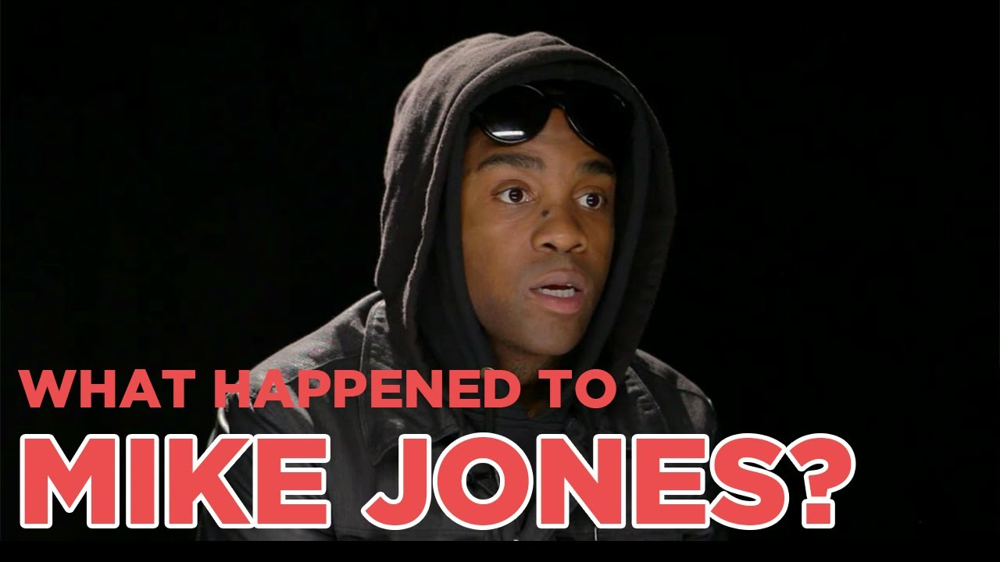

Experiences (Albums)
(2005) - Who Is Mike Jones?
- Released: April 19, 2005
- Label: Swishahouse, Warner Bros.
- Format: CD, digital download
(2009) - The Voice
- Released: April 28, 2009
- Label: Ice Age, Asylum, Warner Bros.
- Format: CD, digital download
(2019) - Where Is Mike Jones?
- Released: 2017
- Label: Ice Age, Atlantic
- Format: CD, digital download
Education (or lack thereof)
- Jones originally wanted to be a National Basketball Association player
who rapped on the side. He transferred from school to school many
times, forcing him to only play in YMCA leagues due to transfer rules
after the 9th Grade. Jones dropped out of high school and briefly took
jobs at fast food restaurants. He worked at a Compaq plant and sold
cell phones from an apartment on Antoine Drive. T. Brown, Jones's
partner in several financial ventures, said that he sold some "dime
bags" for six months, but the two mainly bought "T-Mobile Sidekicks"
and sold them for an inexpensive price.
Things I done for my peeps!
-
Jones has been actively involved in many charity programs, such as
his Ice Age for Kids and The American Dream Foundation, through
which he hosted community youth events and donated thousands of
dollars to help.[citation needed]